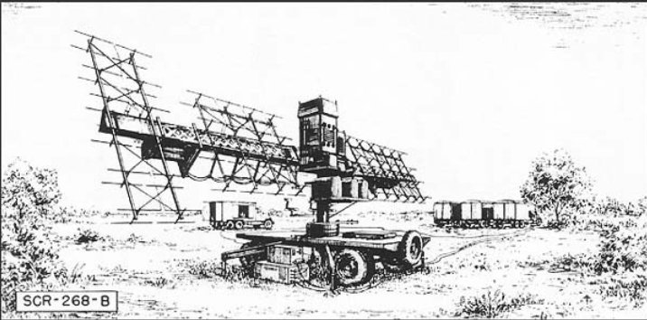
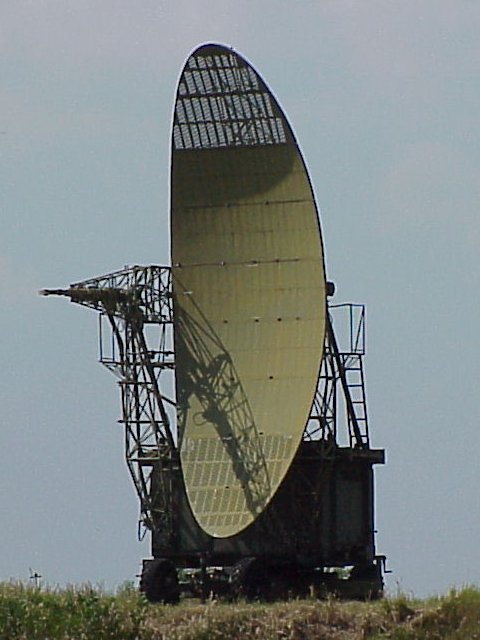
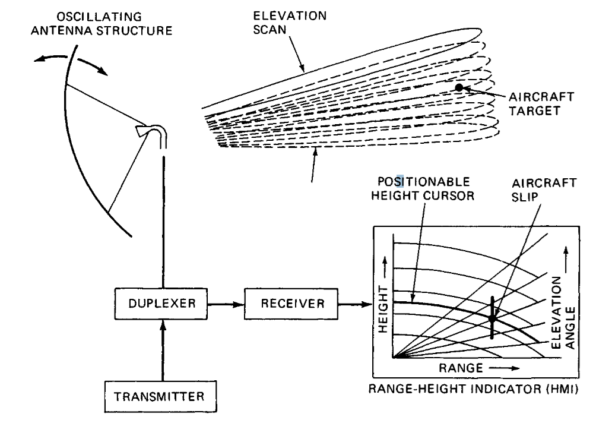
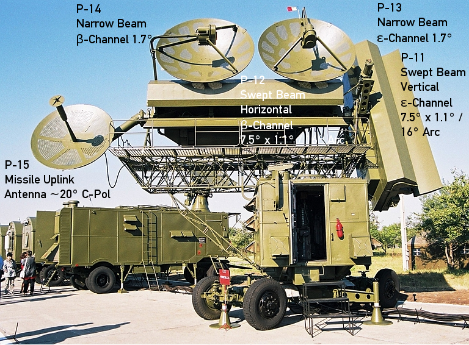
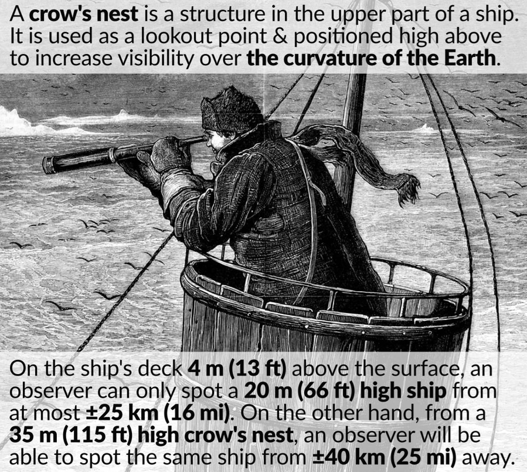
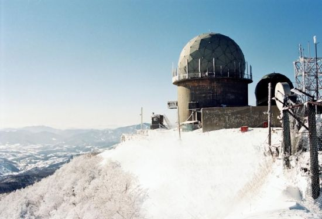
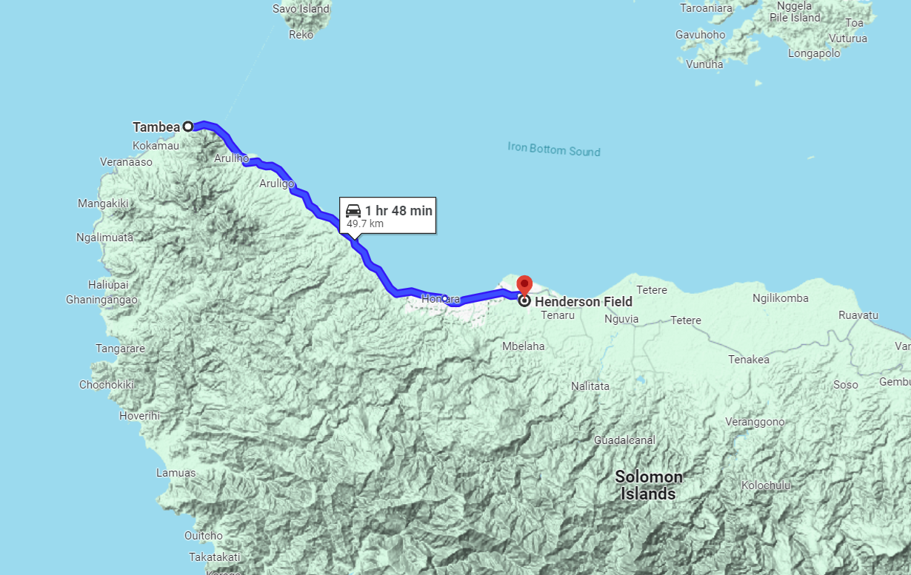
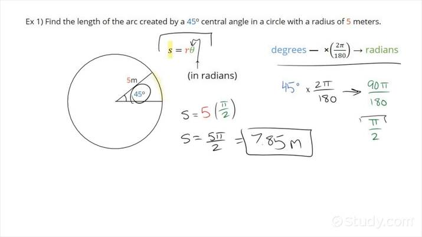
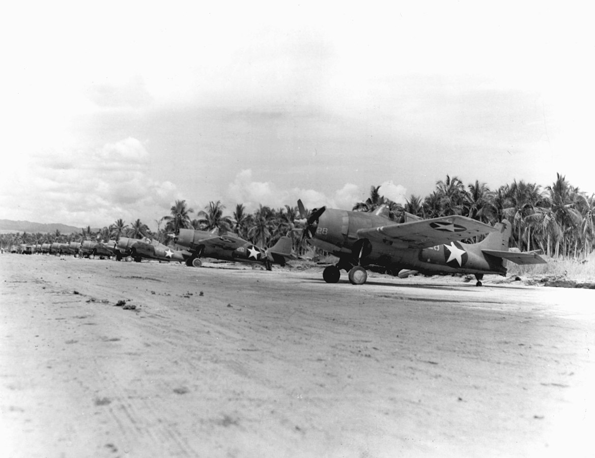

미해병대의 레이더 이야기 (2) - 고개를 끄덕이는 레이더
게시: 2024-06-20T06:30:09+09:00
<항공기지는 뭘로 지키나> 1942년 8월 20일, 드디어 과달카날 섬의 Henderson 활주로가 준비되고, 곧 항모로 실어온 미해병대의 와일드캣과 돈틀리스 폭격기 등이 여기에 착륙. 흔히 항공기지가 있는 섬을 '불침항모'라고 부르는데, 섬이 침몰하지 않는 것은 맞지만 항모보다 몹시 취약한 부분이 있었음. 항모라면 적에게 발견되지 않도록 계속 여기저기를 떠돌아 다니면 되지만, 지상에 만든 활주로는 어디로 숨지도 도망가지도 못함. 헨더슨 기지도 일본군의 강력한 항공기지가 있는 라바울 바로 인근에 만든 활주로이다보니, 언제 공습을 받을지 몰라 전전긍긍할 수 밖에 없었음. 이렇게 전진배치된 항공기지를 지키는 것은 대공포도 있겠으나 그보다는 역시 그 기지에서 출격하는 전투기. 문제는 항모에서 하듯이 하루종일 상공에서 CAP (Combat Air Patrol)을 치며 적기 내습에 대비하기에는 아직 전투기와 조종사 숫자가 적었음. 결국 적기가 오는지 여부를 열심히 감시하다가 적기가 온다는 낌새가 보이면 재빨리 이륙하여 요격에 나서는 것이 꼭 필요. 자신들을 지켜줄 항모가 도망쳤다며 화물선들까지 도망치는 바람에 레이더 하역을 못하게 되자, 일단은 인근 섬 해안에서 호주인 농장주들이 눈으로 일본기들을 감시하고 무전으로 알려주는 것에 조기 경보를 의지. 그러다 마침내 9월 2일, SCR-270 레이더가 헨더슨 기지에 들어옴. 며칠 안에 총 3대의 조기 경보용 SCR-270 레이더와 2대의 대공포 조준용 SCR-268 레이더가 과달카날 섬 여기저기에 설치됨. 최대 240km 밖의 항공기까지 탐지가능한 SCR-270에 비해 SCR-268은 고작 35km까지가 최대 탐지거리였으나, SCR-268은 수신 안테나를 위아래로 까닥까닥 움직여 적기의 고도까지 탐지할 수 있어서 매우 유용. 이건 해군의 CXAM radar가 고도 탐지에 젬병이라 와일드캣 조종사들에게 언제나 욕을 먹던 것에 비해 엄청난 장점.

(SCR-268 레이더의 저 가로 활대는 위아래로 회전이 가능하여, 저 맨 왼쪽에 있는 위아래로 긴 안테나 어레이가 위아래로 끄덕거리며 lobe switching에 의해 적의 고도를 탐지. 자세한 내용은 지난 편인 https://nasica1.tistory.com/785 참조)

(옛 소련의 PRV-17 Lineyka 고도 탐지 레이더. 영어로는 height finder라고 불리던 이런 고도 탐지용 레이더는 특히 매우 납작한 레이더 빔을 조사하기 위해 저런 독특한 모양새의 reflector를 달고 있었고, 저 reflector를 위아래로 까딱까딱 움직였으므로 보통 nodding radar, 즉 고개를 끄덕거리는 레이더라고 불렸음)

(고개를 끄덕이며 목표물의 고도를 측정하는 레이더의 대략적 원리. 물론 이게 가능하려면 전파 빔의 위아래로의 퍼짐각(angular spread)이 매우 좁아야 했고, 그러자면 파장이 매우 짧은 전파를 이용해야 했음.)

(소련의 S-75/SA-2 대공 미쓸 유도용 SNR-75M3 레이더. 보시다시피 수평으로 넓은 빔과 수직으로 넓은 빔을 이중으로 조사하여, 수평빔은 고도를, 수직빔은 방위각을 측정.) <산꼭대기 올라갈 사람?> 그러나 이런 레이더를 활용한 일본기 요격은 생각보다 어려웠음. 일단 지형. 이상적으로는 그 일대에서 가장 높은 곳에 레이더를 설치하고 사방을 감시하는 것이 좋음.

(옛날 범선에서도 견시(lookout)은 당연히 가장 높은 곳, 즉 돛대 꼭대기에 올라가서 사방을 감시.)

(우리나라 공군의 레이더 기지들도 주로 산꼭대기에 있음. 비록 산꼭대기라고 해도 저런 소규모 기지가 징집 사병들에게는 의외로 꿀 빠는 곳이라는 이야기도 있음.) 문제는 과달카날 섬은 의외로 굉장히 큰 섬이라는 점. 우리나라 충청북도보다는 조금 작은 정도. 그리고 헨더슨 비행장은 당연히 주변에 고지가 없는 북쪽 해안가에 위치. 섬에서 가장 높은 Popomanaseu 산 (해발 2335m, 참고로 한라산이 1947m)은 헨더슨 비행장에서 직선거리로 25km 남쪽에 있었음. 미군이 아직 섬 전체를 다 장악했다고 보기도 어렵고, 언제 일본군이 기습 상륙할지도 모르는 상황에서 레이더 팀을 포포마나세우 산으로 보내는 것은 위험한 일이고, 보내려고 해도 무거운 레이더 장비를 산꼭대기까지 올릴 방법도 없음. 과달카날은 길 하나 없는 열대 우림의 섬으로서, 산꼭대기는 고사하고 주변에서 머지 않은 낮은 산으로 옮기는 것도 사실상 불가능. 설령 가능하다고 해도 그 멀고 높은 산꼭대기에 있는 레이더 초소에 발전기용 연료와 식량 등을 계속 공급할 방법도 마땅치 않음. 그러니 어쩔 수 없이 헨더슨 기지 주변의 낮은 언덕 몇 군데에 레이더를 분산 배치하는 것이 할 수 있는 전부.

(과달카날 섬에서의 헨더슨 기지의 위치와 주변 지형을 보여주는 지도. 서쪽 끝의 탐베아로부터의 거리가 대략 50km이니 섬의 크기를 짐작하실 수 있을 것.) 상황이 이렇다보니 레이더 탐지 효율이 확 떨어졌음. 육군용 조기경보 레이더 SCR-270은 원래부터 해군용 CXAM 레이더보다 성능이 좀 떨어져서, 먼 거리 목표물에 대한 방위각 측정이 부정확했는데, 이렇게 주변에 높은 산들이 있다보니 그로 인한 clutter가 많아 더욱 정확도가 떨어졌음.
조기경보 레이더를 가지고 있으면 좋은 점은 아군 전투기를 그 방향으로 멀리 보내어 원거리에서 여유있게 적기를 요격할 수 있다는 것. 그런데 위와 같은 이유 때문에 헨더슨 기지의 미해병대 전투기들은 멀리서 일본기를 요격한답시고 원거리로 나갈 수가 없었음. SCR-270 레이더의 정확도는 주변에 장애물이 없을 때에도 가까운 거리에서 2도 정도였는데, 이렇게 주변에 산이 있고 또 원거리라서 3도까지 오차가 있다고 하면, 그 3도 오차가 50km 밖에서는 거의 8km의 거리차로 나타났기 때문. WW2 당시 요격기가 맨 눈으로 적기를 찾아낼 수 있는 거리는 조종사의 시력과 집중, 날씨 등에 따라 2km~8km까지 차이가 벌어지는데, 그 정도의 오차는 너무 큰 위험 부담.
원호 길이 = 라디안 * 반경 = 각도 * [(2*3.14)/360] * 반경 = 3 * [(2*3.14)/360] * 50 = 7.853 km

(1943년 1월, 과달카날 헨더슨 기지의 미해병대 Wildcat 전투기들)
그럼에도 불구하고 레이더들이 완전히 쓸모가 없었던 것은 아닌 것이, 평소 활주로에서 비상대기하던 미해병대 와일드캣들은 SCR-270이 먼거리에서 적기의 출현을 알려주면 미리 출격하여 상공에서 대기할 수 있었음. 이들은 이륙하자마자 곧장 기지 위 7~8km 상공까지 나선형을 그리며 올라가 대기하다가, 고도 측정이 가능한 단거리 레이더 SCR-268이 정확한 방위각과 고도를 알려주면 그 정보를 이용하여 헨더슨 기지 바로 인근에서 일본기들을 덮쳤음. 이렇게 하여 미해병대는 8월 20일부터 그 해 말까지 약 4개월간 무려 570대의 일본기를 격추. 같은 기간 중 미해병대는 총 86대를 상실. 이는 미해병대의 완벽한 승리.